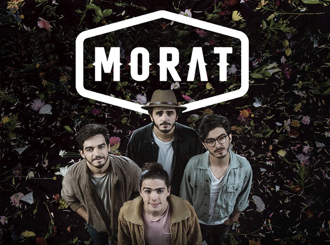
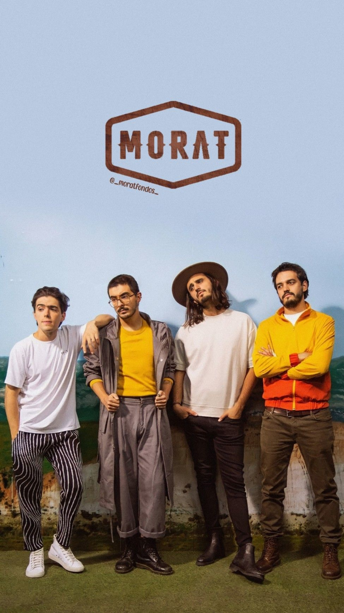

Morat, formada en 2011 en Bogotá, Colombia, es una banda de folk-pop integrada por Juan Pablo Villamil Cortés en banjo, guitarra y voz, Juan Pablo Isaza Piñeros en teclados, guitarra y voz, Alejandro Posada Carrasco en percusión, batería y voz y Simón Vargas Morales en bajo, guitarra y voz.
En 2015 lanzan el tema “Mi Nuevo Vicio”, en el que participa Paulina Rubio, y se dan a conocer en algunos países de Latinoamérica. El 24 de julio editan el EP “Grabado En Madera”.
El 17 de junio de 2016 editan su álbum debut, titulado “Sobre el Amor y Sus Efectos Secundarios”, que incluye “Mi Nuevo Vicio”, “Mil Tormentas” junto a Cali & El Dandee, “Cuánto Me Duele”, producido por El Dandee y “Cómo Te Atreves”. El video de este último está inspirado en el cuento de Julio Cortázar “Autopista del Sur” y fue rodado en las afueras de Bogotá junto a un grupo de amigos.
El 24 de febrero de 2017 lanzan el single “Amor Con Hielo”. Luego le siguen “Ladrona” y “La Última Vez”. El 23 de mayo tocan por primera vez en Argentina, en La Trastienda de Buenos Aires. El 23 de junio llega “Sobre el Amor y Sus Efectos Secundarios... Y Unas Cuantas Cosas Más”, una edición especial del primer álbum, que incluye el soundtrack "Yo Contigo, Tú Conmigo", del film "Mi Villano Favorito 3". El 3 de noviembre lanzan “Besos En Guerra”, canción en la que colabora Juanes. El 24 de noviembre vuelven a Argentina, presentándose esta vez en el Teatro Ópera de Buenos Aires.
El 16 de febrero de 2018 presentan el sencillo "Para Que Nadie Se Entere", que puede escucharse en la telenovela argentina "Simona", protagonizada por Ángela Torres. El 23 del mismo mes lanzan "Antes de los 20". El 8 de marzo se estrena el sencillo grabado junto a Paty Cantú "¿A Dónde Vamos A Parar?", perteneciente al álbum tributo a Marco Antonio Solís, titulado "Todos Somos Más". El 8 de junio estrenan el sencillo "Cuando Nadie Ve" y el 29 del mismo mes presentan "Punto y Aparte". El 14 de septiembre graban "El Embrujo", junto a Josemi y Antonio Carmona. El 21 de septiembre tocaron a sala llena en el Teatro Gran Rex de Buenos Aires y recibieron a dos invitadas: Tini Stoessel y Cami, artista chilena. El 25 de octubre sale el nuevo álbum "Balas Perdidas".

El 28 de marzo de 2019 tocan en el Estadio Luna Park de Buenos Aires. El 31 de octubre lanza su nuevo sencillo y video "A Dónde Vamos".
El 6 de marzo de 2020, Morat estrena "No Termino", nuevo single y video. El 2 de abril estrena "Nunca Te Olvidé". El 22 de mayo lanzan junto a Sebastián Yatra “Bajo la mesa”. A finales de julio hacen su segunda colaboración musical con Aitana para le tema “Más de lo que Aposté”. El 7 de agosto, como parte del disco homenaje a Zoé, “Reversiones”, presenta la versión de un tema ya considerado clásico dentro del rock mexicano "Labios Rotos".
El 5 de noviembre de 2021 lanza "Lo que hará mi boca" en feat con Antonio José
El 20 de mayo de 2022 la banda estrena el single y videoclip "París" junto al artista argentino Duki. Los artistas se encontraron en París para grabar el videoclip de la canción homónima, dirigido por Jean Lafleur. En esta pieza audiovisual, la banda y Duki muestran París en 3 minutos, desde las calles hasta el cielo de la “Ciudad del amor”.
El 1 de septiembre lanzan el single y videoclip "506" junto a Juanes.
El 4 noviembre lanzan el álbum "Si ayer fuera hoy".
El 11 de marzo de 2021 lanza “No hay más que hablar”. El 16 de abril se unen a al cantante español Beret para hacer el single y el video "Porfa no te vayas”.
El 3 de junio lanzan "Idiota", single y video en colaboración con Danna Paola. El 23 de julio la banda publica el disco "¿A dónde vamos?".